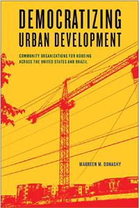

<HTML><head>
<meta name='robots' content='noindex,nofollow' /><script> (function(i,s,o,g,r,a,m){i['GoogleAnalyticsObject']=r;i[r]=i[r]||function(){  (i[r].q=i[r].q||[]).push(arguments)},i[r].l=1*new Date();a=s.createElement(o),  m=s.getElementsByTagName(o)[0];a.async=1;a.src=g;m.parentNode.insertBefore(a,m)   })(window,document,'script','//www.google-analytics.com/analytics.js','ga');   ga('create', 'UA-43183130-1', 'temple.edu');   ga('send', 'pageview'); </script><title>Maureen M. Donaghy: Democratizing Urban Development - Print</TITLE><link rel="stylesheet" href="../general.css" type="text/css"><SCRIPT LANGUAGE = JAVASCRIPT></SCRIPT></HEAD><BODY LINK="#3152A5" VLINK="#3152A5" ALINK=Gray BGCOLOR=White><CENTER><P CLASS=intro><br>Examining how community organizations fight to prevent displacement and secure affordable housing across cities in the U.S. and Brazil<br><br></P></CENTER><br>&nbsp;<!--none//--><Table width="100%" border=0 cellspacing=5><tr><td width="175" align="center"></td><td><h1 class = "booktitle">Democratizing Urban Development</h1> <h1 class = "subtitle">Community Organizations for Housing across the United States and Brazil</h1><h3 class="author">Maureen M. Donaghy </h3><p class="info">paper EAN: 978-1-4399-1406-9 (ISBN:1-4399-1406-0)</br>$34.95, May 18, <font color=#990033>Available</font><br><p class="info">cloth EAN:  978-1-4399-1405-2 (ISBN:1-4399-1405-2)</br>$99.50, May 18, <font color=#990033>Available</font><br><p class="info">Electronic Book EAN: 978-1-4399-1407-6 (ISBN:1-4399-1407-9)</br>$34.95, May 18, <font color=#990033>Available</font><br><p class="info">234 pp, 5.5 x 8.25, 2 tables</p></td></tr></table></P></td></tr></table><BR>
	
	
	<BLOCKQUOTE><p><i>"</i>Democratizing Urban Development <i> is a particularly noteworthy book with an especially appealing four-city, North-South scope. In command of a vast literature, Donaghy offers an inspired analysis that links social movement with urban development struggles. The combination of housing and urban work makes this book a pathbreaking volume for comparative urban research."</i><br>&#8212;<b>Clarence Stone</b>, Research Professor of Political Science and Public Policy, George Washington University, and author of <i>Regime Politics: Governing Atlanta, 1946&#8211;1988</i><br></BLOCKQUOTE>
	
	<P><p>Rising housing costs put secure and decent housing in central urban neighborhoods in peril. How do civil society organizations (CSOs) effectively demand accountability from the state to address the needs of low-income residents? In her groundbreaking book, <i>Democratizing Urban Development, </i>Maureen Donaghy charts the constraints and potential opportunities facing these community organizations. She assesses the various strategies CSOs engage to influence officials and ensure access to affordable housing through policies, programs, and institutions. <br><br> <i>Democratizing Urban Development</i> presents efforts by CSOs in four cities across the hemispheric divide: Rio de Janeiro, S&atilde;o Paulo, Washington, DC, and Atlanta. Donaghy studies the impact and outcomes that ensue from these efforts, noting that CSOs must sometimes shift their own ideology or adapt to the political environment in which they operate to ensure access to housing and support the goals of an inclusive city.<br>
		
		<P CLASS="top"><A HREF="#top">BACK TO TOP</A></P></p>
		<P><h2  class="inpageheading"><A NAME="excerpt"></a>Excerpt</h2><p><A HREF="http://www.temple.edu/tempress/chapters_2400/2423_ch1.pdf">Read the Introduction (pdf).</A><br><P CLASS="top"><A HREF="#top">BACK TO TOP</A></P></P>>
		
		<P><h2  class="inpageheading"><A NAME="reviews"></a>Reviews</h2>
			
			<p><i>"Throughout the world, big cities are struggling to provide housing for their growing populations. Accommodation issues are particularly acute for members of lower-income groups, who are increasingly being challenged by gentrification and real estate development. In her pioneering comparative study, </i>Democratizing Urban Development <i>, Maureen Donaghy deftly tells the story of how local communities and their supporting organizations in four cities&#8212;two in Brazil, two in the United States&#8212;push against the prevailing tendencies of marginalization and polarization. The unusual compilation of cases from both developed and transitional cities yields some exceptional nuggets of insight into a problem that, in many respects, appears to be virtually intractable."</i><br>&#8212;<b>Richard Stren</b>, Professor Emeritus of Political Science and Senior Fellow, Global Cities Institute at the University of Toronto, and co-editor of <i>Cities Transformed: Demographic Change and Its Implications in the Developing World</i><br>
				
				<P CLASS="top"><A HREF="#top">BACK TO TOP</A></P></b></p>
	
	<p><h2 class="inpageheading"><A NAME="contents"></a>
	Contents</h2><P><span style="font-family: 'Verdana';font-size: 13px;" >Acknowledgments <br/> <br/>Introduction  <br/> <br/>1. The Role of Community Organizations in Urban Development and Housing across the United States and Brazil  <br/>2. Strategies and Outcomes of Community Organizations  <br/>3. Resisting Removal in Rio de Janeiro  <br/>4. Neighborhood Transition and Housing for Low-Income Residents in Atlanta  <br/>5. City Center Development in S&atilde;o Paulo  <br/>6. Citywide Growth and Gentrification in Washington, D.C.  <br/>7. Toward Democratization of Urban Development?   <br/>Notes  <br/>References  <br/>Index</span></P>
	
	<P CLASS="top"><A HREF="#top">BACK TO TOP</A></P></p>
	
	<P><H2  class="inpageheading"><A NAME="author bio"></a>About the Author(s)</H2>
		<p><b>Maureen M. Donaghy</b> is an Assistant Professor of Political Science at Rutgers University, and the author of <i>Civil Society and Participatory Governance: Municipal Councils and Social Housing Programs in Brazil</i>.<br>
			
			<P CLASS="top"><A HREF="#top">BACK TO TOP</A></P></P></P>

<P><h2 class="inpageheading"><a name="subjects"></a>Subject Categories</h2> <p>
	<a href="http://www.temple.edu/tempress/political.html" target="_top">Political Science and Public Policy</a> <br>
	<a href="http://www.temple.edu/tempress/urban.html" target="_top">Urban Studies</a> <br>
	<a href="http://www.temple.edu/tempress/social.html" target="_top">Community Organizing and Social Movements</a> <br>
	<a href="http://www.temple.edu/tempress/latin.html" target="_top">Latin American/Caribbean Studies</a> <br><a href="" target="_top"></a> </p></P>

<P><h2 class="inpageheading">In the Series</h2><p><a target="_top" href="http://www.temple.edu/tempress/urban_life.html" OnMouseOver="window.status='Click for other books in this series!';return true;"OnMouseOut="window.status=" ><i>Urban Life, Landscape, and Policy</i></a></P><p><p>The <em>Urban Life, Landscape, and Policy</em> Series, edited by David Stradling, Larry Bennett, and Davarian Baldwin, was founded by the late Zane L. Miller to publish books that examine past and contemporary cities, focusing on cultural and social issues. The editors seek proposals that analyze processes of urban change relevant to the future of cities and their metropolitan regions, and that examine urban and regional planning, environmental issues, and urban policy studies, thus contributing to ongoing debates. </p></P></P></P>

<P CLASS="top"><A HREF="#top">BACK TO TOP</A></P></td><td width=2%>&nbsp;</td><td width=5>&nbsp;</td></tr></table><BR><font face="Arial" size="1"><a href="copyright.html" OnMouseOver="window.status='Web Copyright Policy';return true;" OnMouseOut="window.status=''" TITLE="Web Copyright Policy">&copy;</a> 2018 <a href="http://www.temple.edu" target="new" OnMouseOver="window.status='Link to Temple University home page';return true;" OnMouseOut="window.status=''" TITLE="Link to Temple University home page">Temple University</a>. All Rights Reserved. This page: http://www.temple.edu/tempress/titles/2423_reg.html</font></BODY></HTML>                    
